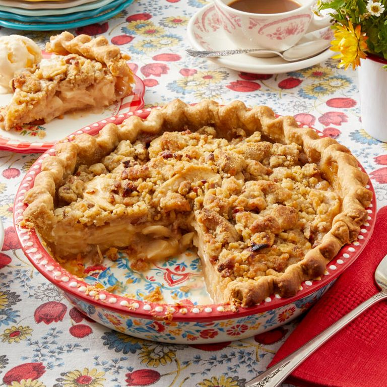

Home
The Most Delicious Apple Pie in the World

How to make the best apple pie ever.
This recipe was borrowed from The Pioneer Woman's "Best Lasagna Recipe"
Ingredients List
FOR THE FILLING:
- 1 whole unbaked pie crust
- 1/2 c. brown sugar
- 1/2 c. sugar
- 1 tbsp. all purpose flour
- 1/2 c. heavy cream
- 2 tsp. vanilla extract
- 1/8 tsp. cinnamon
FOR THE TOPPING:
- 7 tbsp. butter
- 3/4 c. all purpose flour
- 1/2 c. brown sugar
- 1/4 c. pecans (or more)
- Dash of salt
- Ice cream (to top it off)
Steps
- For the pie: Preheat oven to 375 degrees.
- Roll out pie dough and place it in a pie pan. Decorate the edges as desired.
- Add apple slices to a large bowl. In a separate bowl, mix together cream, 1/2 cup brown sugar, 1/2 cup sugar, 1 tablespoon flour, vanilla, and cinnamon. Pour over apples. Pour apples into pie shell.
- For the topping: In the bowl of a food processor (or you can mix by hand) combine butter, flour, sugar, pecans (chop if you're not using a food processor), and salt. Mix until everything comes together in clumps. Pour topping over apples.
- Attach foil to the edges and lay a piece of flat foil loosely over the top of the pie. Place pie pan on top of a rimmed cookie sheet and bake for one hour. At the end, remove foil and allow to finish baking and browning. Can bake for up to 15 or 20 minutes more if necessary.
- Remove from oven when pie is bubbly and golden brown.
- Serve with ice cream, yum!